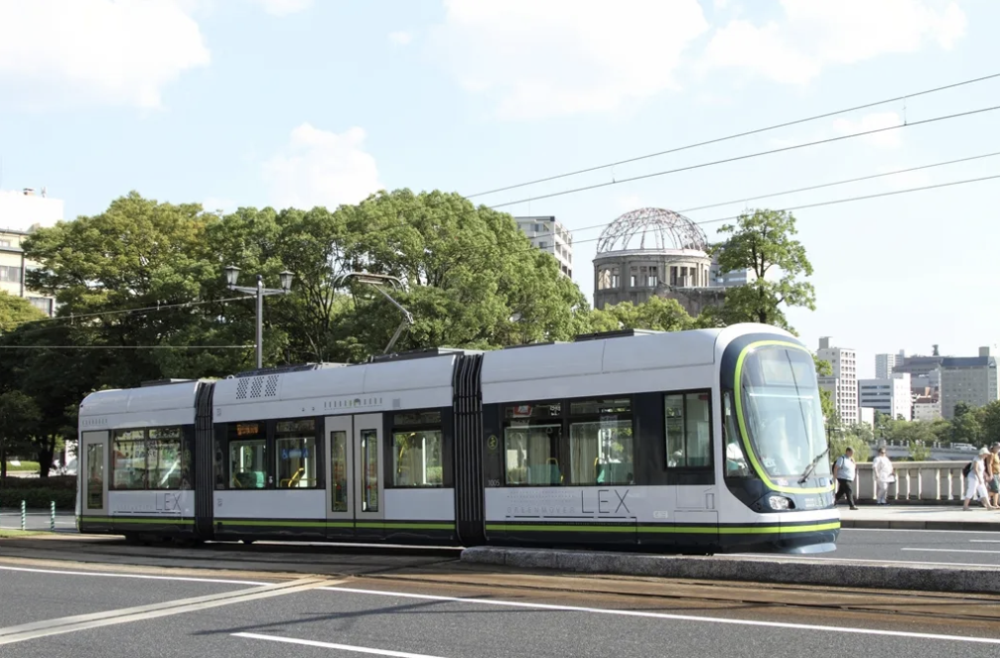
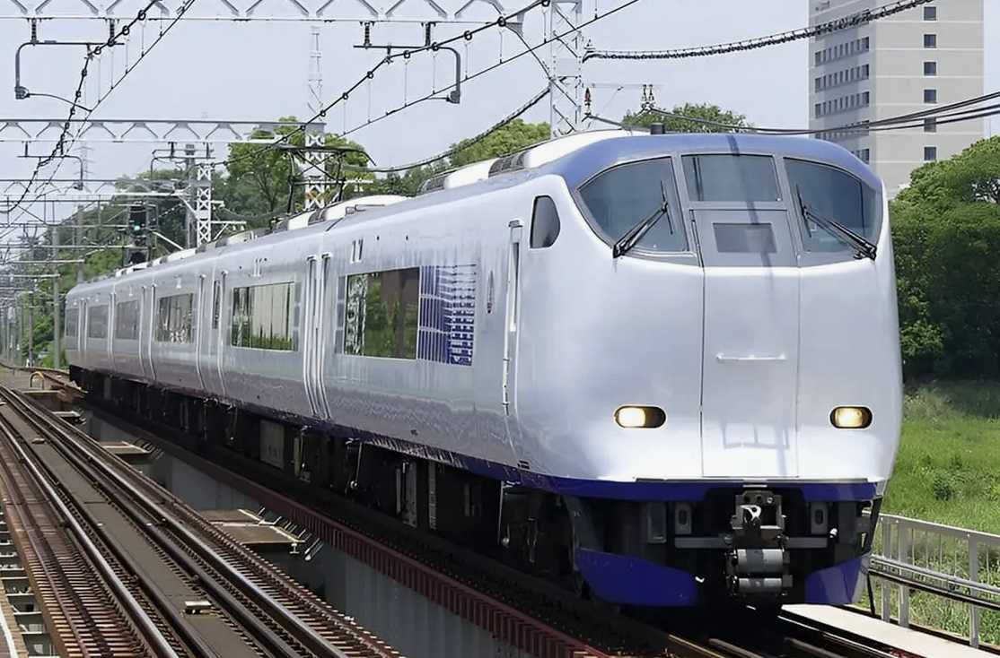
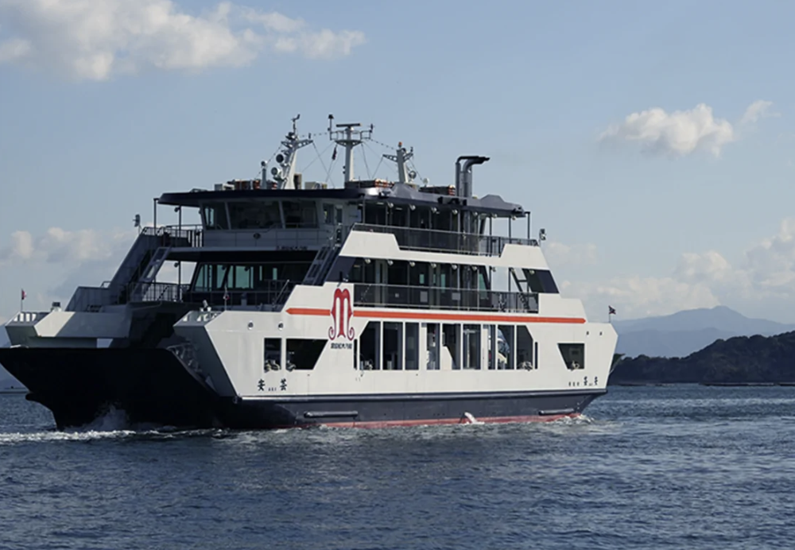
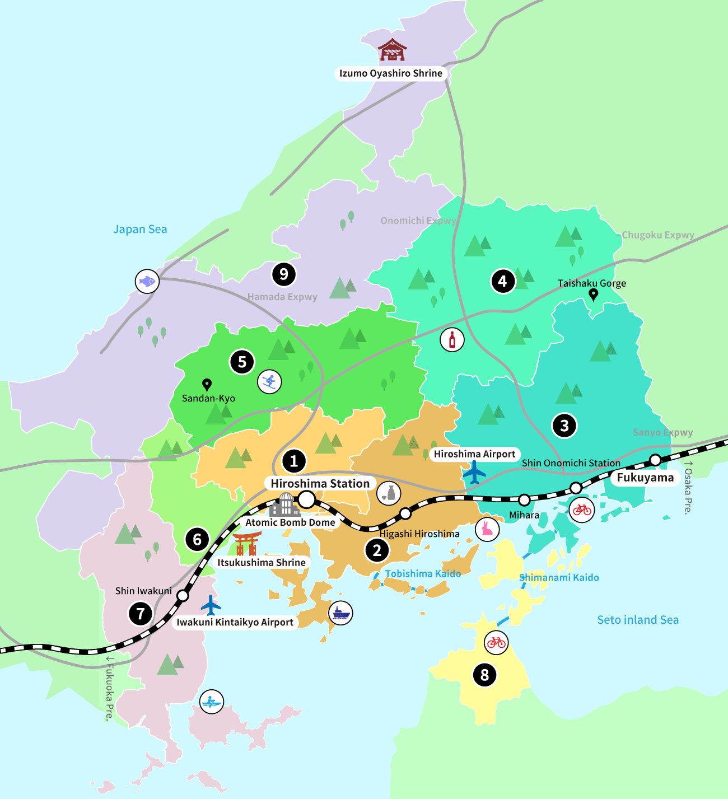

히로시마 시내 관광에 가장 편리한 교통수단입니다. 히로시마역, 원폭돔, 평화기념공원, 핫초보리 등 주요 관광지를 연결합니다. 노선이 시내 중심을 지나기 때문에 처음 방문하는 여행객도 쉽게 이용할 수 있습니다.

히로시마역에서 미야지마구치, 오노미치, 이와쿠니 등 주변 지역으로 이동할 때 유용합니다. 미야지마에 갈 경우 JR 산요본선을 이용해 미야지마구치역까지 이동한 뒤 페리로 갈아타면 됩니다.

미야지마구치 부두에서 미야지마섬으로 이동하는 배입니다. 탑승 시간은 약 15분 정도이며, 날씨가 좋을 때는 바다 위 도리이를 가까이 볼 수 있습니다. 미야지마 관광에 꼭 필요한 교통수단입니다.

히로시마는 시내 관광과 주변 지역 탐방이 모두 편리한 도시입니다. 시내에서는 전차를 이용해 원폭돔, 평화공원, 히로시마성 등을 둘러보고, JR 열차로 미야지마구치까지 이동한 뒤 페리로 미야지마섬을 방문하는 것을 추천드립니다. 또한, 오노미치나 이와쿠니 등 주변 지역도 JR 열차로 쉽게 접근할 수 있으니, 일정에 여유가 있다면 꼭 방문해보세요!
지도 보기